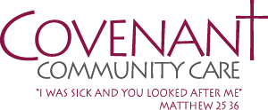

-
Proposed Features
- WordPress core: stable, extensible and proven, with weekly backups.Read More
- Easy-to-use drag and drop page builderRead More
- Donation widget with customizable goal tracking
- Booking system for appointments/classses/community events with integrated payment options, sales reporting and discout codes. Providers of services can easily modify their schedules using WordPress.com account.
- User/Patient login with interactive profiles and notificationsRead More
- Search engine optimization for each page on the site using Yoast SEO pluginRead More
-
Price Estimate
- Hosting$0 Anually
- Domain Transfer$0
- Development (30 hrs est.)$25 Hourly
- Maintenance/Updates$50 Monthly
- Optional Booking System (at-cost)$100 One Time
- Year 1 Projected Total
(30 * $25) + (5 * $50)$1000-$1100
-
Transition
- Existing content will be exported from Drupal and exported into Wordpress
- Content from the past year will be recovered from The Internet Archive
- I will provide several mockups of the site in development but I am still trying to develop a modern, future-proof theme that captures the values and goals of the organization. You may view a portfolio of some of my past work here.